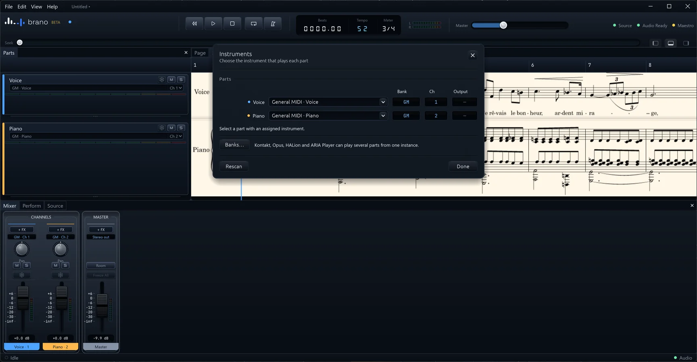
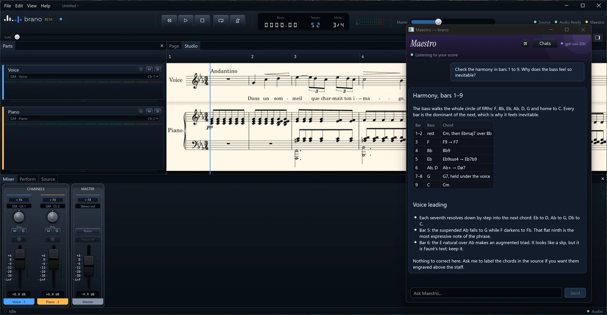
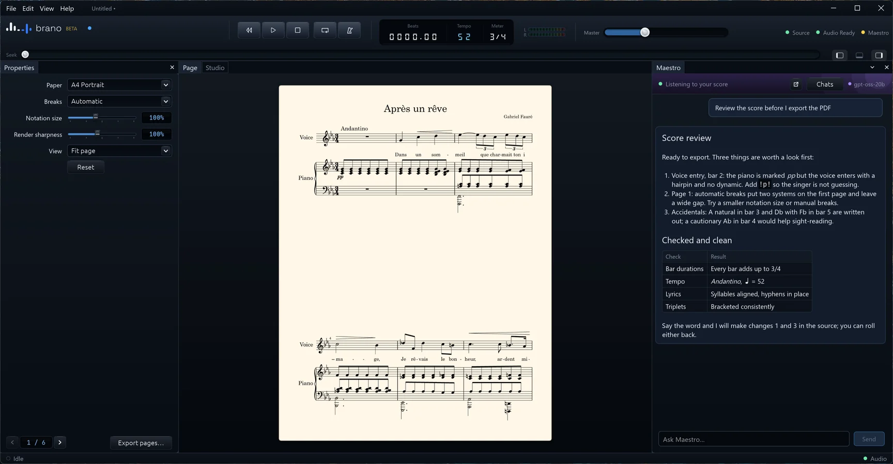
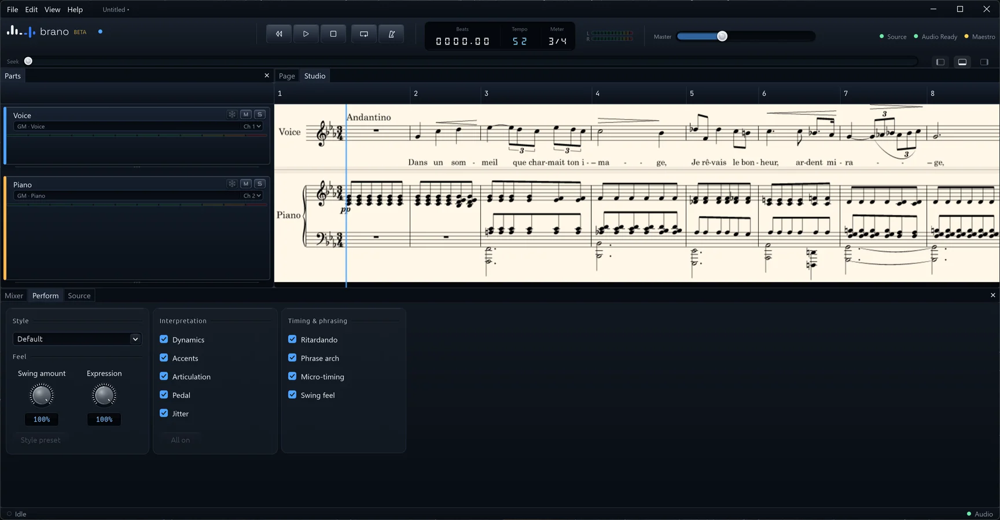
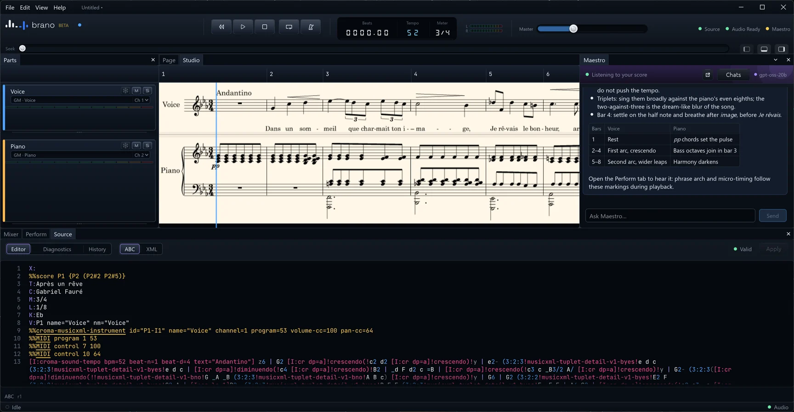
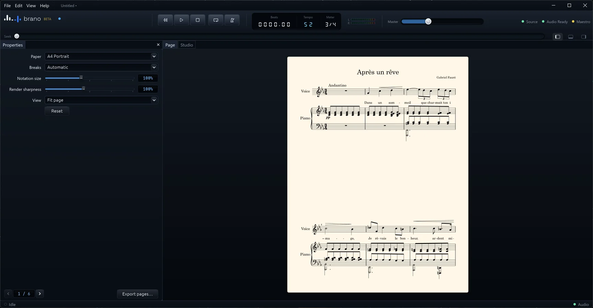

Studio
Notación y carriles de DAW en una sola vista.
Cada parte es un carril grabado con su instrumento, canal, silencio, solo y congelado. El mezclador, el transporte y el cabezal siguen la misma partitura que estás leyendo.
Toca con los sonidos General MIDI incluidos o aloja tus propios instrumentos y efectos VST3. Cada plug-in se ejecuta en su propio proceso aislado, de modo que un instrumento defectuoso no puede tumbar tu sesión.

Maestro · Armonía con IA
Pregunta por qué funciona la armonía.
Maestro es el asistente de IA integrado en Brano. Lee la propia notación, así que puede nombrar los acordes, seguir la línea del bajo y comprobar la conducción de voces compás a compás.
Desacóplalo en su propia ventana y tenlo junto a la partitura mientras escribes.

Maestro · Revisión con IA
Un segundo par de ojos antes de exportar.
Pide una revisión y Maestro enumera lo que merece una mirada: una dinámica que falta, un salto de página incómodo, una alteración que conviene recordar. Puede hacer los cambios en la notación, y puedes deshacer cualquiera.
Maestro está desactivado por defecto y funciona con un proveedor de IA que tú configuras, o con un modelo local para que nada salga de tu ordenador.

Perform
Una reproducción que frasea.
Dinámicas, acentos, articulación, pedal, arco de frase, ritardando, microtiempo y swing se derivan de la propia notación. Elige un estilo, decide cuánta expresión quieres y escucha.

Código
ABC es la única fuente de verdad.
Edita texto plano y ve actualizarse la partitura grabada. Los diagnósticos señalan la línea exacta, el historial te deja volver atrás, y la importación y exportación de MusicXML te mantienen conectado con otros programas de notación.

Página
Grabado listo para el atril.
Dispón la partitura en papel, ajusta el tamaño de la notación y los saltos, y exporta PDF, SVG, PNG o TIFF. La música sale como MusicXML, MIDI o ABC; la mezcla como WAV o FLAC, completa o por pistas.

Hecho para no estorbar
Sin cuenta, sin nube
Brano no guarda nada en la nube y no tiene analíticas ni telemetría.
Un archivo por sesión
Las sesiones son archivos .brn únicos que guardas donde quieras. Los archivos .abc se abren directamente.
Plug-ins aislados
Los instrumentos y efectos VST3 se ejecutan aislados de la aplicación y entre sí.
Congela y exporta
Congela partes a audio y exporta mezclas o pistas separadas en WAV o FLAC.